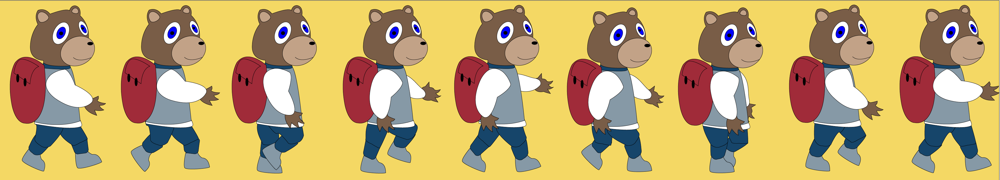

CONTACT
- Phone: (+45) 20 77 88 72
- Email: vh.11@hotmail.com
SOCIAL MEDIA


Vores første opgave indenfor forløbet "Grundlæggende Animation" var at lave vores egen individuelle animation. Opgaven lød på en animation, hvor brugeren skulle foretage forskellige valg, der ville påvirke animationens handlingsforløb.
Da opgaven var selvstændig tog jeg mig af alle dele af projektet. Dvs. alt fra skitser, design af karakterer og scener til udviklingen af selve animationen i HTML, CSS og javascript.
Efter længere tid med brainstorming fandt jeg frem til at min historie skulle handle om en bjørn der skal op om morgenen og i skole. Her får brugeren præsenteret to valgmuligheder: skal bjørnen trykke på snooze og udskyde alarmen, eller skal den stå op med det samme. Vælger man snooze sover bjørnen over sig og kommer for sent i skole. Vælger man derimod at bjørnen skal stå op med de samme, kommer den afsted i god tid og siger farvel til en glad bjørnemor.
I udviklingen af animationen skulle jeg lave et spritesheet. Dette gøres ved at tegne sin figur i forskellige positioner, hvorefter man ved hjælp af kodning, kan skabe bevægelse, således at en animation opstår.
Lyde brugt til min animation
Må desværre erkende at visse emner indenfor forløbet har været svært og er blev gennemgået meget hurtigt og jeg havde derfor personligt svært ved at følge med. Kombineret med sygdom resulterede dette i at jeg ikke fik lavet min animation færdig, da jeg ganske enkelt ikke vidste hvordan jeg skulle få lavet det sidste. Dette fandt jeg dog ud af i vores næste opgave indenfor "grundlæggende Animation". Her lavede jeg i fælleskab med min gruppe en færdig animation der der indholdte det min forrige animation manglede.
Dette var hvad jeg endte med at få lavet.